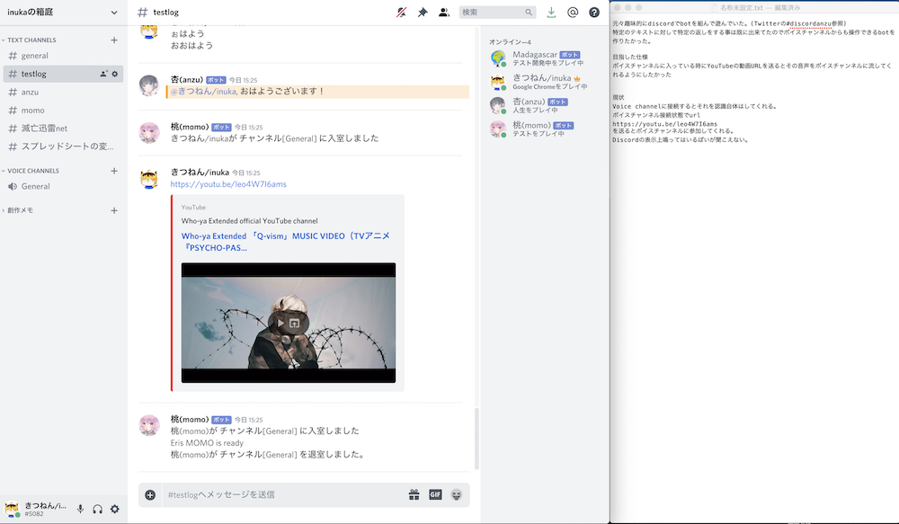

ソフトウェアネットワーク演習II

元々趣味でdiscordのbotを組んでいました。
文字列のキャッチボールは既に出来ていたので音声を返してくれる機能を実装したいと思いました。
仕様としては「自分がボイスチャンネルに接続した状態でyoutubeのurlを送るとその動画の音声をbgm代わりに流してくれる」を目標としました。
実装できた事
- BOTが参加しているサーバー上に存在するボイスチャンネルへの各ユーザーの参加情報の取得
- 指示の認識
- 支持者が参加しているボイスチャンネルへの参加
実装できなかった事
- ボイスチャンネルに音声を流す